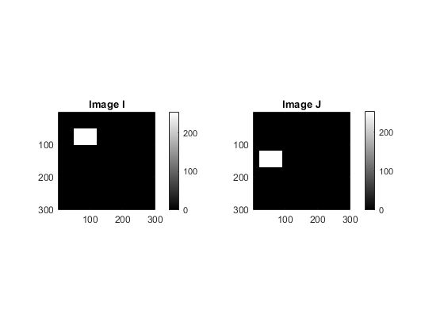
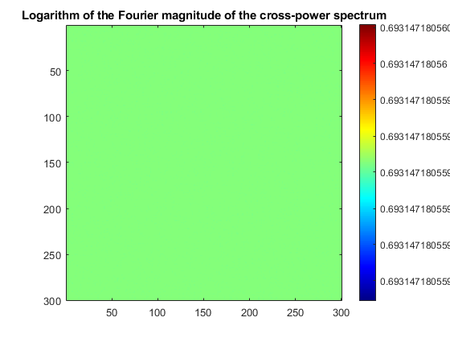
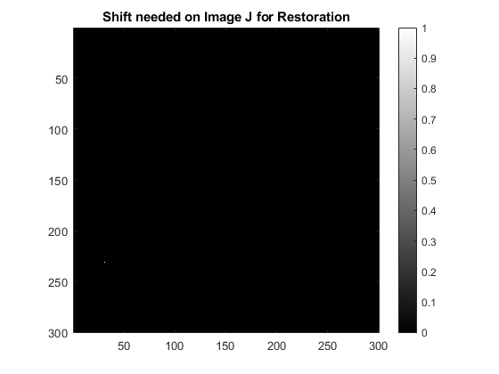
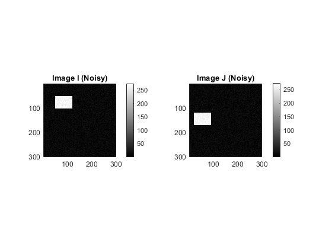
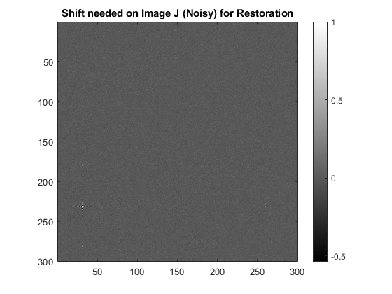

Contents
MyMainScript
tic;
Applying the algorithm for Original Images
% Image I and J respectively I = zeros(300); I(50:100, 50:120) = 255; J = zeros(300); J(120:170, 20:90) = 255; fig = figure; subplot(121); greyscale(I); title("Image I"); subplot(122); greyscale(J); title("Image J"); % Centred fourier transforms I1 = fftshift(fft2(I)); I2 = fftshift(fft2(J)); f = (I1 .* conj(I2))./(abs(I1 .* I2)); lf = log(abs(f) + 1); fig2 = figure(2); color(lf,"Logarithm of the Fourier magnitude of the cross-power spectrum"); % Inverse fourier transform g = ifft2(f); fig3 = figure(3); greyscale(g/max(g(:))); title("Shift needed on Image J for Restoration");  
Applying the same for the Noisy Images
I_noisy = I + rand(size(I)) * 20; J_noisy = J + rand(size(I)) * 20; fig4 = figure(4); subplot(121); greyscale(I_noisy); title("Image I (Noisy)"); subplot(122); greyscale(J_noisy); title("Image J (Noisy)"); f1_noisy = fftshift(fft2(I_noisy)); f2_noisy = fftshift(fft2(J_noisy)); f_noisy = (f1_noisy .* conj(f2_noisy))./(abs(f1_noisy .* f2_noisy)); lf_noisy = log(abs(f_noisy) + 1); fig5 = figure(5); color(lf_noisy,"Logarithm of the Fourier magnitude of the cross-power spectrum"); g_noisy = ifft2(f_noisy); fig6 = figure(6); greyscale(g_noisy/max(g_noisy(:))); title("Shift needed on Image J (Noisy) for Restoration"); 
Verifying the results
%The spike for the Image J restoration plot occurs at (31, 231). This is interpreted as (31, -71) by applying a wrap-around on the image of size 300 * 300 for translation. The initial translation applied was (-30, 70). Hence this new translation will retore Image I from Image J %Similarly, in case of noisy images,we see a spike at (31, 231). This again is interpreted as (31, -71) by applying a wrap-around on the image of size 300 * 300 for etranslation. But since the original images were noisy, the spike is not clear but surrounded by other non-zero frequensies. %The logarith plots of the Fourier magnitudes is a constant of value =log(2) because the result of the cross-power spectrum is a complex number of unit magnitude always.
Analysis of time complexities
%For an Image of size N * N, this method involves first step, the calculation of Fourier transforms using FFT [time complexity of each being of O(N log(N))] followed by a conjugation [O(N)] & vectorized pointwise multiplication & division [O(1)]. Thus, the overall time complexity is O(N log N). %If we use pixel-wise image comparison for an N * N image, the time complexity of predicting the translation would be O(N^2)");
Rotation Correction mentioned in the paper
%If f2(x,y) is a rotated version of f1(x, y) [with a rotation of θo], %doing a Fourier Transform in the cartesian coordinates would yield F2(u, v) = F1(ucos(θo) + vsin(θo), -usin(θo) + vcos(θo)). The magnitudes for both are same. So, we can use the same concept of cross-power spectrum as before by converting the rotation by θo into a translation. In the polar coordinates, the rotation would become a translation. So we convert the images into polar coordinates & take their Fourier Transform. %f2(r, θ) = f1(r, θ-θo) %F2(m, n) = exp(-2πj(n.θo)) * F1(m, n) %Thus, cross-power spectrum of F1(m, n) & F2(m, n) would yield exp(2πj(n.θo)), using which we can calculate the rotation. %Any translation in x & y would lead to a change in r by ro, such that the %Cross power spectrum would yield exp(2πj(m.ro + n.θo)). Hence, displacement & rotation can be figured out. The exact (x, y) translations can be figured out using the original cross-power spectrum in the cartesian coordinates. toc; function greyscale(img) myNumOfColors = 200; myColorScale = [[0:1/(myNumOfColors-1):1]', [0:1/(myNumOfColors-1):1]', [0:1/(myNumOfColors-1):1]']; imagesc(img); colormap (myColorScale); colormap gray; daspect ([1 1 1]); colorbar end function color(img,t) myNumOfColors = 200; myColorScale = [[0:1/(myNumOfColors-1):1]', [0:1/(myNumOfColors-1):1]', [0:1/(myNumOfColors-1):1]']; imagesc(img); title(t); colormap (myColorScale); colormap jet; daspect ([1 1 1]); colorbar end
Elapsed time is 10.147759 seconds.